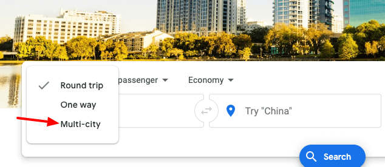
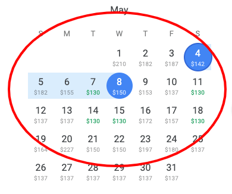

For this project, I analyzed Google Flights and compared to other websites that offer the same services to identify ways that might improve usability. Google Flight makes airfare hunting easier and faster. It is designed to help you compare prices from multiple airlines and help book the cheapest tickets. To better analyze Google Flights I will be looking Navigation,Visual hierarchy, Scanning and the overall design.
Navigation
When it comes to navigability, Google flights tool does a great job at addressing this issue. it offers features that other websites such Skiplagged do not offer. Looking at the picture below, Google provides a clickable drop down menu that allows you to book multi-city flight. For a user, this might an important feature to have since it reduces the time spent juggling between websites trying to figure out the affordable options.
 Google Flights multi-city optionOn the other hand, to improve usability Skiplagged should add a multi-city option on the menu as shown on the image below. This should at least be an option that's offered on every websites.
Skiplagged suggested menu optionVisual Hierarchy
I personally find the visual hierarchy on Google’s Flights tool straight forward but also unconventional compared to other websites. It is just plain and simple, it doesn’t follow the traditional conventions that you would normally see on other websites. The overall look of Google flight lacks aesthetics, but user's perspective the page leads you straight forward to what you are looking for.
The Overall Design
The overall design of Google Flights is awesome. It seems be designed for any age group and users that are looking to save on flights.There are no ads running on the page or other unnecessary features. It also takes the least amount of time to find information about airfare. One other feature to appreciate is the ability of being able to see the best days to purchase affordable tickets as show in the picture below.
 Price variationConclusion
To wrap up my conclusion on usability, it has hard to measure what every other user is thinking of. The best way to avoid these ambiguities is to just stick to the conventional way when designing. I peronally find the design Google Flights opted to go with more effecient.